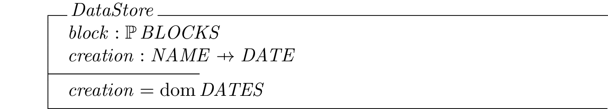

Read time: 3.4 minutes (341 words)
PyLiT Data Store¶
PyLiT uses a data store modeled after the one used by Git t manage repositories. However, PyLiT does not store entire documents in one piece. Instead, each source file is decomposed into a list of basic building blocks, and those blocks are stored.
Obviously, there will be a lot of blocks in any given project. Each block is written in some language, and can be transformed into a number of different formats. If the block is to be displayed in print, the basic output formats determine what transformation needs to be done. The heart of PyLiT is based on performing the transformations as part of storing the block, and that transformation does not need to be redone unless the source for that block changes.
How Git Stores Files¶
Git manages a single file, actually, a single version of a file, as a “blob”. The contents of the file are run through a SHA-1 hash function that calculates a 40 character hash code for that file. The odds of two files generating the same hash code are extremely low, so we use this code to identify the blob.
Git splits this 40 character code into two parts. The first two characters name a subdirectory under the data store root directory. The remaining 38 characters becomes a new file name for the compressed contents of the file.
This process loses the file name, so Git uses a second primary object called a “tree” to save that information.
A tree is a text file containing a list of other objects and the names of those objects.
Finally, Git defines a “commit” object which tracks the author (commiter), date, and a log message for a commit. It also holds a list of the trees defined at that moment in the repository.
Formal Specification¶
At the risk of losing some readers, we will present the specification of the PyLiT data store in a formal notation.
What this odd notation says is fairly simple (especially if you ever took a discrete math course). Our data store is a system that maps files into blocks, and stores those blocks in a set. That means there is one and only one unique block in the system.